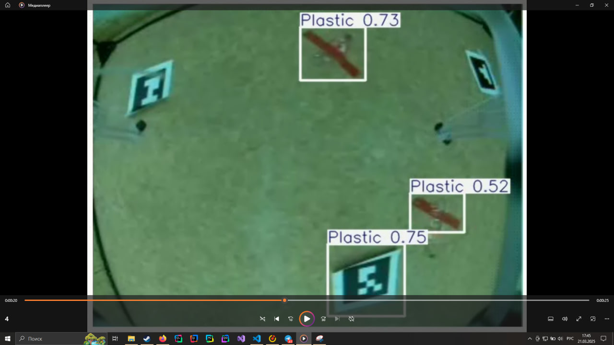

День 4: Финальные штрихи
В четвёртый день мы завершили основные задачи и провели финальные тесты проекта.


Обеспечено стабильное и надёжное распознавание объектов, что позволяет системе корректно функционировать в различных условиях.
🚀 Рефлексия дня от команды МИФИ-Дрон
Достижения:
- ✅ Нейросеть стабильно распознаёт объекты.
- ✅ Обеспечен стабильный и точный автономный полёт.
- ✅ Корпус защиты на стадии завершения печати.
- ✅ Получены конструктивные правки после защиты проекта.
Направления для улучшения:
- 📌 Завершить тестирование корпуса на практике.
- ⏳ Провести финальную настройку автономного полёта.
- 💡 Доработать нейросеть для повышения точности и скорости.
Вывод: День был продуктивным. Продолжаем двигаться к цели! 🚀🔥